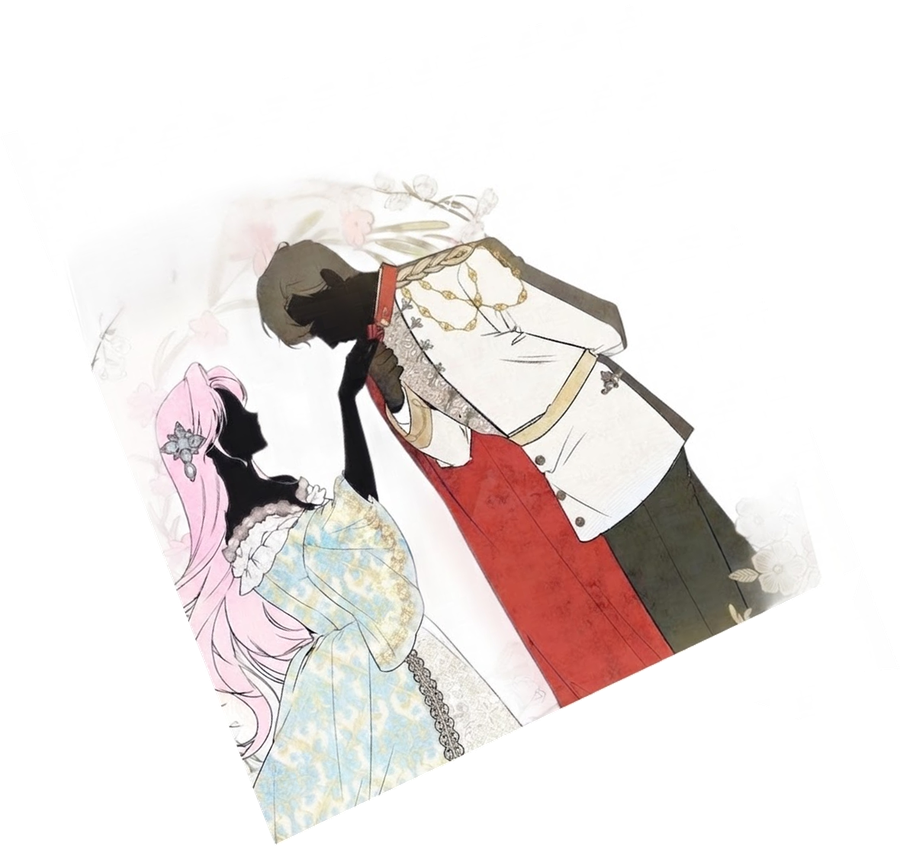

The world of Historical Romantic Isekai Manhwas
Ranks, Customs, and History

Noble Ranks
Most manhwa borrow their ranks from European nobility. Here they are from highest to lowest, so you always know who outranks whom at the ball.
-
Duke
Wife: Duchess
The highest noble rank below the royal family. Dukes often had royal blood and ruled huge territories. In manhwa, the duke is usually the cold, powerful male lead everyone fears.
-
Marquess
Wife: Marchioness
The name comes from the “marches,” the border lands a marquess guarded for the crown. Some translations spell it Marquis.
-
Count
Wife: Countess
A count governed a county. In Britain the same rank is called an earl, but his wife is still a countess.
-
Viscount
Wife: Viscountess
The word means “vice-count,” the count's deputy. Viscount families are often side characters or rivals in manhwa.
-
Baron
Wife: Baroness
The lowest rank of the nobility. In manhwa, a baron's family is often poor or newly titled, which makes it a common starting point for a heroine.
Forms of Address

- Emperor / Empress
- Your Imperial Majesty
- King / Queen
- Your Majesty
- Prince / Princess
- Your Highness
- Duke / Duchess
- Your Grace
- Marquess to Baron
- My Lord / My Lady
- Knight
- Sir, followed by his name
- A noble's children
- Young Master / Young Lady
“Young Master” and “Young Lady” come from Korean terms of respect and show up often in English translations.